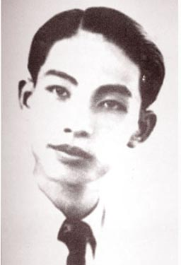

Sinh ngày 22-10 -1910 ở Văn Lâm, phủ Đức Thọ (Hà Tĩnh). Học Trường phủ, trường Vinh, trường Bảo hộ, trường Thuốc Hà Nội. Tốt nghiệp y khoa bác sĩ năm 1940, hiện ở nhà học chữ Hán và làm thơ chữ Hán.
Thơ Thái Can phần nhiều đã đăng ở Phong hoá, Tiểu thuyết thứ bảy, Hanoi báo, Văn học tạp chí 1935. Những bài thơ đầu (ký Th.C) đã in trong quyển Những nét đan thanh. Ngân Sơn tùng thư, Huế, xuất bản 1934.

.
Tôi đã cố đọc lại thơ Thái Can để mong tìm lại cái say sưa ngày trước. Nhưng lòng tôi cứ dửng dưng. Sao bây giờ tôi thấy thơ Thái Can sáo quá mà người thiếu nữ trong thơ Thái Can thì hầu hết ẻo lả đến khó chịu. Nhất là những nụ cười. Những nụ cười sao mà vô duyên, mà trơ trẽn thế!
Thơ Thái Can vẫn như trước. Dễ lòng tôi đã khác xưa? Một người thơ cũng như một người tình, yêu đó rồi bỏ đó sao cho đành. May thay tôi vẫn có thể thích được dăm bảy bài. Kể những bài đó đều phỏng theo lối thơ xưa. Chữ dùng cũng xưa. Nhưng có cái gì bảo ta rằng ở đây có một người khóc cười thật. Ở đây không còn cái thói khóc gượng cười vờ nó vẫn lưu hành trên sân khấu tuồng cổ và trên thi đàn Việt Nam khoảng vài mươi năm trước.
Khóc bạn, Nguyễn Khuyến viết:
Rượu ngon, không có bạn hiền,
Không mua, không phải không tiền không mua,
Câu thơ nghĩ, đắn đo không viết;
Viết đưa ai, ai biết mà đưa.
Giường kia treo những hững hờ:
Đàn kia gảy những ngẩn ngơ tiếng đàn.
Tôi tưởng đó toàn chuyện bịa. Nguyễn Khuyến hẳn không treo giường để chờ người bạn họ Dương đã đành. Cả cái chuyện thơ rượu cũng bịa nốt. Ba năm không gặp nhau [1] chắc Nguyễn Khuyến vẫn thơ rượu như thường, thơ rượu nào cần phải có Dương Khuê. Nhưng chuyện không thực mà tình thực, chuyện mượn người xưa, mà tình là tình Nguyễn Khuyến.
Thái Can cũng mượn những chữ sẵn của người xưa nhưng người đã gửi được nỗi lòng mình trong đó. Khi ta đọc những câu:
Vó ngựa trập trùng trên ải Bắc;
Tuyết sương lạnh lẽo giá râu mày!
Gươm thiêng lấp lánh bên lưng nhẹ,
Ngựa hí vang lừng gió trận may.
ta thấy trong những câu này, cũng như trong lời ngâm của Nguyễn Khuyến, mối cảm của thi nhân đã phát lộ ra bằng những âm thanh, bằng một nhịp lối nhịp nhàng riêng.
Thơ Thái Can nhạc điệu không có nhiều lối và cũng chỉ nằm trong khuôn khổ thơ thất ngôn, nhưng trong những câu thơ hay bao giờ cũng thấm thía. Một người kỹ nữ, lúc canh khuya sau lúc khách làng chơi đã ra về, một mình ngồi nhìn phía quê nhà và than:
Biết đâu mà gửi lòng thương nhớ,
Mà biết cùng ai gửi nhớ thương.
Một thiếu niên gọi bạn tình trong mộnh tưởng:
Thu liễu em ơi, có biết không?
Những là ngày ngày nhớ lại đêm mong.
Thu này người tưởng cùng em gặp,
Dưới nguyệt đôi ta tỏ chút lòng.
Có gì sáo hơn những câu ấy. Nhưng có những lúc ta buồn và mỏi không muốn tìm tòi gì: ta buông xuôi tay, ta buông xuôi lòng cho trôi theo những lời, dầu sáo, dầu cũ miễn là âm điệu khi lên khi xuống cùng ăn nhịp với lòng ta. Những lúc đó ngâm thơ Thái Can thì tuyệt.
Cho đến những bức tranh thỉnh thoảng ta gặp trong thơ Thái Can cũng không phải là những bức tranh tô bằng nét, bằng màu, mà chính là hoà bằng nhạc điệu:
Mỹ nhân lững thững xem hoa rụng,
Trâm ngọc quên cài tóc bỏ lơi.
Sương toả bên mình như khói nhẹ;
Xiêm y tha thướt mái hiên ngoài.
Hãy đọc đi đọc lại bốn câu này. Có phải lời thơ yểu điệu và mềm mại như một người đẹp?
Những lúc thi nhân tìm được âm điệu thích hợp để diễn đạt nỗi lòng mình, ta thấy người khoan khoái như được giải thoát. Nếu không, người ra chiều uất ức, khó chịu. Người phân vân trước những ham muốn, những mộng tưởng nhiều khi trái ngược nhau. Tâm hồn Thái Can rất phức tạp. Tuy vẫn thường mơ tưởng cái cảnh thanh gươm yên ngựa, song nhác thấy bóng khăn san áo màu thời nay, người cũng không muốn hững hờ qua. Người thực lòng thương những gái giang hồ, người thống trách xã hội đã dẫn họ vào đường truỵ lạc, song những yến diên có ca nhi điểm vui, tất cả cái hào hoa, cái êm dịu của cuộc đời phú quý người cũng không nỡ từ. Người muốm gây một sự nghiệp, người không muốn sống vô ích, người gét hữu hạn và khao khát vô cùng.
Bấy nhiêu điều trái ngược chỉ có thể đưa người ta đến chán nản. ta hãy nghe Thái Can khuyên người ca nhi vừa tự sát mà không chết:
Đứng dậy em ơi! Sống cõi đời
Đời dầu khổ nhục đến mười mươi,
Em nên điểm phấn tô son lại
Ngạo với nhân gian một nụ cười.
Trong hai người, thi nhân và kỹ nữ, dễ đã biết ai chán hơn ai? Cho đến ái ân thi nhân cũng không thiết nữa:
Thôi! Thế lòng anh mãn nguyện rồi
Vì tình là mộng đó mà thôi,
Lòng em một phút yêu anh đó
Cũng thể yêu anh suốt một đời.
Thái Can nói mãn nguyện mà lại đau đớn hơn người lời oán hận của một thi nhân khác, Lan Sơn:
Một phút lòng em mơ bạn mới
Yêu anh sau nữa cũng bằng không.
Août - 1941
Chú thích
[1] Trong bài Nguyễn Khuyến có câu: "Trước ba năm gặp bác một lần".
CẢNH ĐÓ NGƯỜI ĐÂU
Gặp em thơ thẩn bên vườn hạnh
Hỏi mãi mà em chẳng trả lời
Từ đó Bắc Nam, người một ngả
Bên vườn hoa hạnh bóng trăng soi
(Những nét đan thanh)
ANH BIẾT EM ĐI …[1]
Anh biết em đi chẳng trở về,
Dặm ngàn liễu khuất với sương che.
Em đừng quay lại nhìn anh nữa:
Anh biết em đi chẳng trở về.
Em nhớ làm chi tiếng ái ân.
Đàn xưa đã lỡ khúc dương cầm...
Dây loan chẳng đuợm tính âu yếm,
Em nhớ làm chi tiếng ái ân.
Bên gốc thông già ta lỡ ghi
Tình ta âu yếm lúc xuân thì.
Em nên xoá dấu thề non nước
Bên gốc thông già ta lỡ ghi.
Chẳng phải vì anh chẳng tại em:
Hoa thu tàn tạ rụng bên thềm.
Ái tình sớm nở chiều phai rụng:
Chẳng phải vì anh chẳng tại em.
Bể cạn, sao mờ, núi cũng tan,
Tình kia sao giữ được muôn vàn...
Em đừng nên giận tình phai lạt:
Bể cạn, sao mờ, núi cũng tan.
Anh biết em đi chẳng trở về
Dặm ngàn liễu khuất với sương che.
Em đừng quay lại nhìn anh nữa;
Anh biết em đi chẳng trở về.
[1]Chép theo một bức thư (1934).
CHIỀU THU
Hoa hồng rũ cánh bay đầy đất
Trĩu nặng sương thu mấy khóm lan
Mỹ nhân lững thững xem hoa rụng
Ta ngỡ Hằng Nga náu Quảng hàn.
Mỹ nhân lững thững thăm hoa rụng
Trâm ngọc quên cài tóc bỏ lơi
Sương tỏa bên mình như khói nhẹ
Xiêm y tha thướt mái hiên ngoài.
Ta đứng bên hiên kiếm ý thơ
Mỹ nhân vô ý bước đi qua
Cánh hồng quyến luyến bên chân ngọc
Như muốn cùng ai sống phút thừa
Chẳng được như hoa vướng gót nàng
Cõi lòng man mác, giá như sương
Ta về nhặt lấy hoa thu rụng
Đặng giữ bên lòng nỗi nhớ thương.
(Phong hóa)
CẢNH ĐOẠN TRƯỜNG
Em chỉ nói rằng: "Đời em buồn".
Rồi em nức nở lệ sầu tuôn.
(Tâm sự một cô gái nhảy)
Anh nhớ năm xưa trong yến diên
Họp mặt ba kỳ, trăm sinh viên.
Rót chén rượu nồng cùng vui chơi
Trước khi chia tay người mỗi nơi.
Điểm vui yến tiệc bọn ca nhi
Ba bảy mai kia đương vừa thì.
Hoa khôi hôm ấy là em đó,
Liếc mắt đưa tình đá cũng mê.
Hôm nay nức nở sầu ảm đạm
Kể lại đời em nghe thê thảm:
Không quê, không quán, không mẹ cha,
Như cánh bèo trôi không chỗ bám.
Em dấn thân vào hồng lâu
Lụy từ nô bộc đến công hầu.
Rồi lại giạt trôi trường khiêu vũ
Hết lòng chiều khách lại chiều chủ.
Liễu bồ sức vóc được bao nhiêu
Dạn gió dày sương thực đến điều.
May thay em gặp khách phiêu lưu
Cảm thấy tình em thảm đạm nhiều,
Nhặt cánh hoa tàn rơi dưới đất
Chung tình trong một mối thương yêu.
Khách nhớ quê xa trở gót về.
Đêm trường nhớ khách dạ đê mê,
Cảm thấy đời em buồn lạnh, tẻ,
Ngoài đường sương lạnh bước ra đi.
Ra đi gió lạnh tạt ngang mình,
Nghĩ đến đời em, em khiếp kinh,
Kinh khiếp vì đời như vực thẳm
Xui em trụy lạc hỡi trời xanh!
Nếu cũng như ai có mẹ cha,
Buồng xuân rủ gấm với phong là,
Thời em ngày tháng cùng vui sương
Hớn hở nô đùa với cỏ hoa.
Rồi ngày đào lý nở nhành bông,
Em cũng như ai được tấm chồng
Quyền cả chức cao trong xã hội
Êm đềm chia ngọt sẻ bùi chung.
Than ôi! Em có được như người:
Hoa tạ lia cành trước gió rơi
Lăn lóc cát lầm hoen cánh ngọc
Đem thân làm thú vạn muôn người.
*
Lững thững em đi bên vệ đường,
Âm thầm buồn bã; gió cùng sương
Ướt cả áo xiêm, em chẳng biết...
Lòng em mang nặng dấu đau thương.
Chán nản quay đầu em lại nhìn
Cuộc đời quá khứ tựa đêm đen.
Tương lai bước tới chân chồn mỏi,
Một bước đau lòng, một bước thêm!
Lầu các, kìa ai vợ với chồng
Êm đềm trong giấc phụng loan chung.
Riêng em lững thững bên hè vắng
Khóc mãi, mắt em úa đỏ hồng.
Ôi thôi! Em quyết chỉ quyên sinh
Quyết bỏ trần gian, bỏ ái tình.
Trong một gian buồng thuê buổi tối
Đau lòng, em uống thuốc quyên sinh.
Khinh thay! Những gái tiếng con nhà
Vì tính buông tuồng phải trụy sa
Vào chỗ bùn lầy nghề kỹ nữ;
Nhưng em... nào phải muốn giăng hoa.
Giời đất này! Hãy chứng minh:
Vì chưng xã hội quá bất bình.
Thân em thật đã bùn than lấm
Lòng tuyết, em còn giữ tiết trinh.
Mang tấm thân lòng đau xuống suối vàng
Ai người nhân thế chạnh lòng thương?
Ai người biết được em đau khổ?
Đêm lạnh... thân ôi! Cảnh đoạn trường.
Cõi đời dần tối, giấc âm thầm
Hình ảnh ngàn xưa cũng xoá dần,
Sau rốt cảm nghe như mẹ ẵm
Và lời ân ái khách xa xăm.
Sáng sớm người ta vào buồng ngủ,
Thất đảm kinh hồn người la rú
Vội vàng đưa em đến nhà thương,
Để em lạnh lẽo nằm trên giường.
Hồi lâu thuốc thang em tỉnh dậy
Mở mắt, lạ lùng nhìn thế gian;
Bất giác hai hàng lệ em tràn.
Chung quanh em, những người săn sóc
Gạn ghẽ dò la hết cỗi gốc
Em chỉ nói rằng: "Đời em buồn",
Rồi em nức nở lệ sầu tuôn.
*
- Anh cũng như em, chán cõi đời,
Nhưng mà quả quyết sống mà chơi.
Đời càng bạc bẽo cùng mình lắm
Mình cũng yên vui, cũng nói cười!
Cười đời bạc bẽo khinh thế gian
Cho biết rằng ta chẳng phải hèn
Ta sống vì chúng ta quả quyết
Đạp bằng muôn vạn nỗi gian nan.
Đứng dậy, em ơi! Sống cõi đời,
Đời dầu khổ nhục đến mười mươi,
Em nên điểm phấn tô son lại,
Ngạo với nhân gian một nụ cười.
Ngày mai ở mãi chốn chân trời
Trong cảnh gia đình ấm áp vui
Một phút trầm ngâm anh sẽ khấn
Cho em trở lại được tươi cười.
(Hanoi báo)
TRÔNG CHỒNG
Khuê trung thiếu phụ bất tri sầu
Xuân nhật ngưng trang thượng thúy lâu
Hốt kiến mạch đầu dương liễu sắc
Hối giao phu tế mịch phong hầu
(Vương Xương Linh)
Chinh phu ruổi ngựa lên miền Bắc
Tiếng địch bên thành thổi véo von
Mây bạc lưng trời bay lững thững
Chim trời tan tác bóng hoàng hôn
Vó ngựa chập chùng lên ải Bắc
Tuyết sương lạnh lẽo giá râu mày!
Gươm thiêng lấp lánh bên lưng nhẹ
Ngựa hí vang lừng trận gió may
Đứng tựa bên thành xiêm áo lệch,
Kìa ai trông ngóng ải Phiên ngoài
Bóng cờ phất phới xa xa, lạt...
Tình cũ xin nguyên chẳng lạt phai...
Mang ấn phong hầu khi trở lại,
Rỡ ràng chinh phụ nét cười tươi
(Phong hóa)